Case studies · 06
The work, explained.
Six clients. What they asked for, what I actually did, and what came out of it.
001 · Brand strategy · Identity · Verbal identity · Website · Social · Ads · 2025
Huma Laundromat — a laundry people actually trust
Live · humalaundromat.com ↗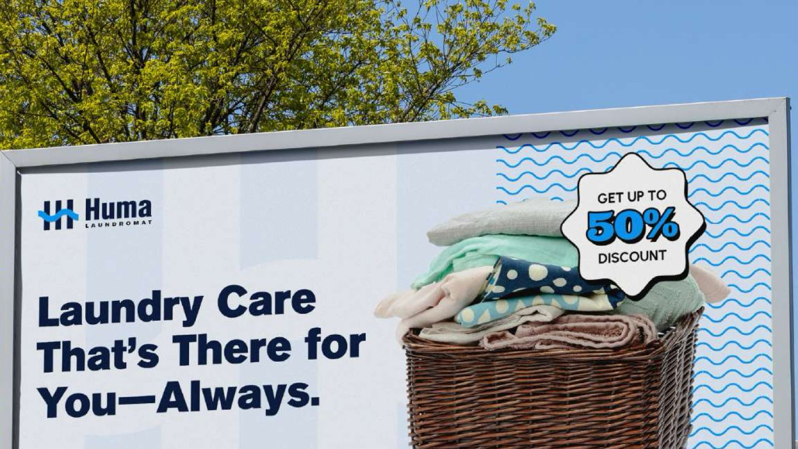
What they asked for
A logo and a website for a new laundry service.
What it actually was
Nobody picks a laundry on looks. They pick on whether the white shirt comes back white.
What I actually did
Every laundry in Abuja advertises freshness, so freshness is worth nothing. What the customer is really deciding is whether to risk their good clothes on a stranger. That’s a trust problem, and trust problems are solved with promises you can be held to — not with a nicer logo.
So the brand is built on the White-Again Guarantee: if it isn’t clean, they do it again, free. That line sits on the website, in the sales conversation and in the ads. “Zero Wahala, 100% Freshness” says the same thing in the language customers actually use with each other.
From there: the full identity, the tone of voice, the website designed and built, and the social system. The Women’s Day campaign profiled a woman working as an architect rather than posting a generic graphic — a service that looks after busy professionals should be seen actually paying attention to them. We ran the pages, made the graphics and video, and ran the paid ads behind them.
What I made
What came out of it
Live and trading across Abuja, serving households alongside guest houses, salons and spas.
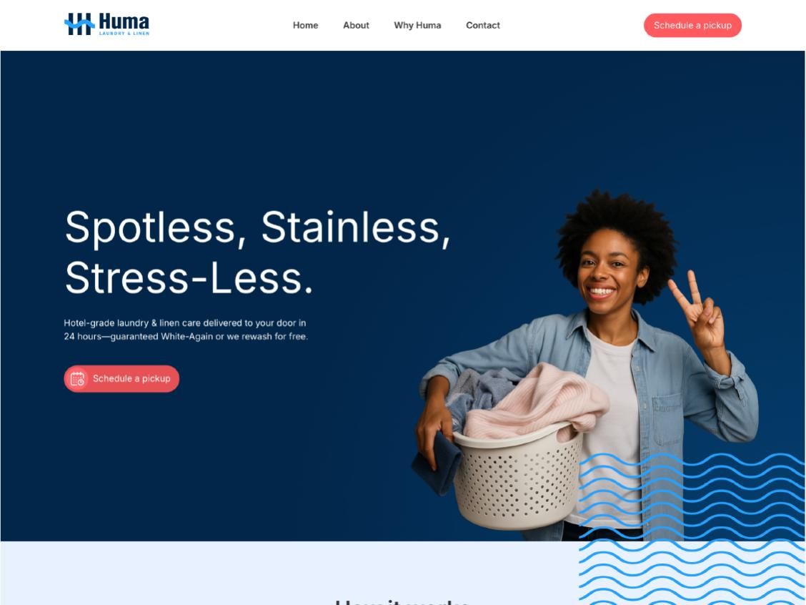
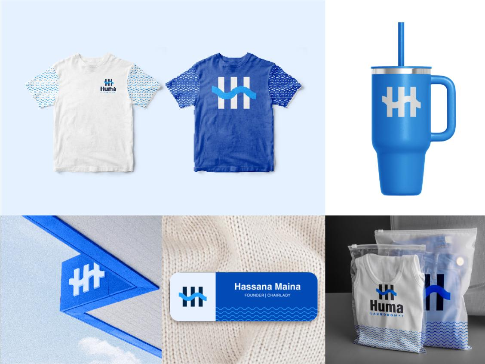
002 · Brand strategy · Identity · Verbal identity · CRM · Film · 2021–present
Priste — a tailor with a name people ask for
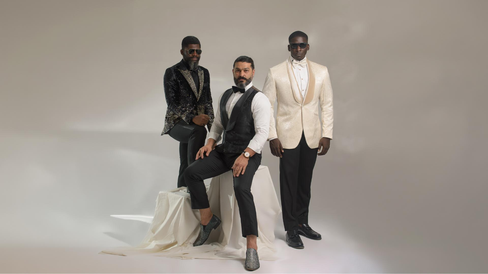
What they asked for
A name and a logo for a new tailoring business.
What it actually was
Nigeria has thousands of excellent tailors and almost no tailoring brands. Skill wasn’t the gap. Being remembered was.
What I actually did
If your customer can’t describe you to a friend, you don’t have a brand — you have a workshop with good reviews. So Priste started with positioning: what the house stands for, who it dresses, and what it will not make. Everything else was built outward from that answer.
Then everything a fashion house needs in order to look like one: visual identity, verbal identity, woven labels, garment tags, crests, badges, pins and enquiry cards. We also built them a customer database so measurements, orders and repeat clients live in one system instead of a notebook — the least glamorous part of the job and the one that keeps paying.
We ran the social account for the first three months to set the standard, shot the first collection, produced the brand film for it, and animated the logo. There have been several shoots since.
What I made
What came out of it
Five years on and still a live client.
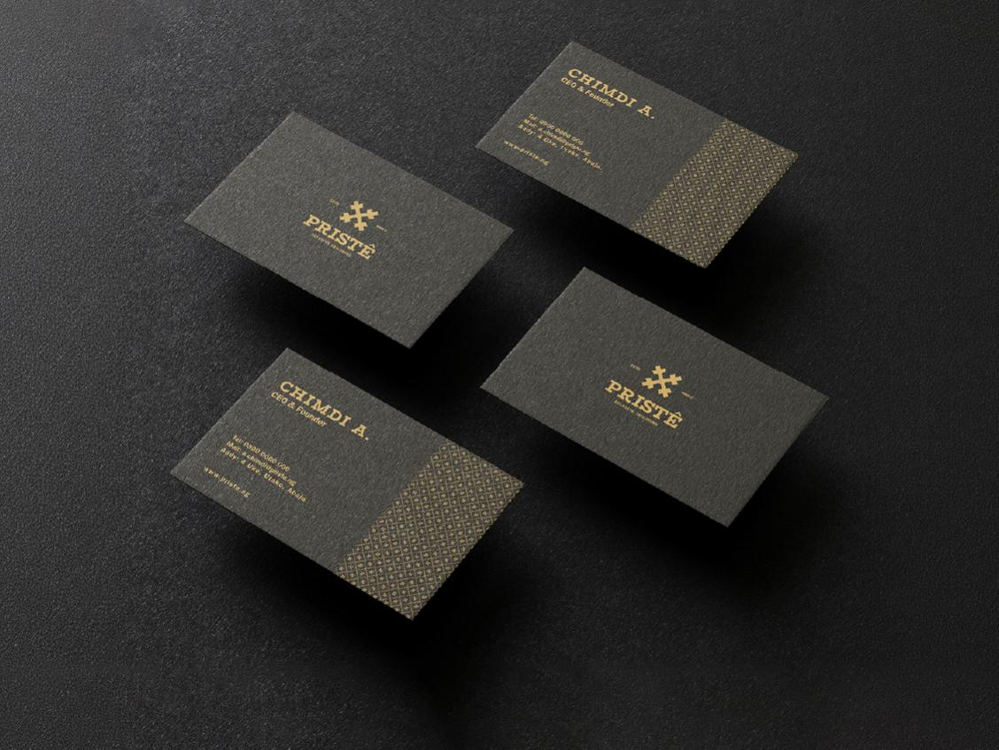
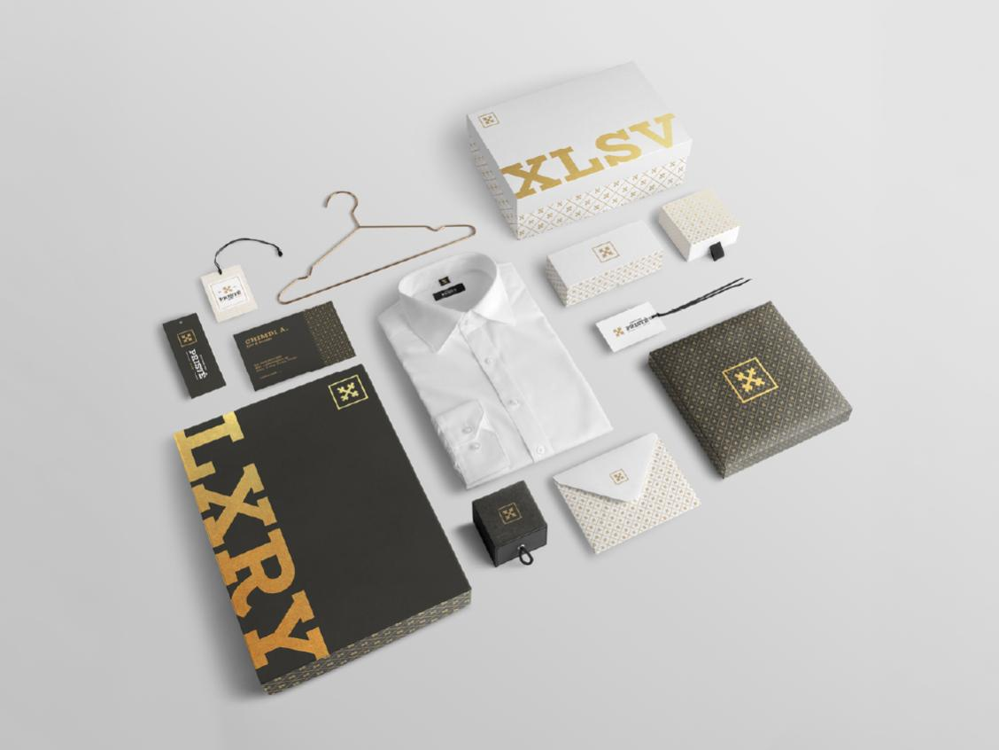
003 · Brand strategy · Identity · Print · Documentary · Photography · 2023
Jewels Trust Fund — loans that charge no interest
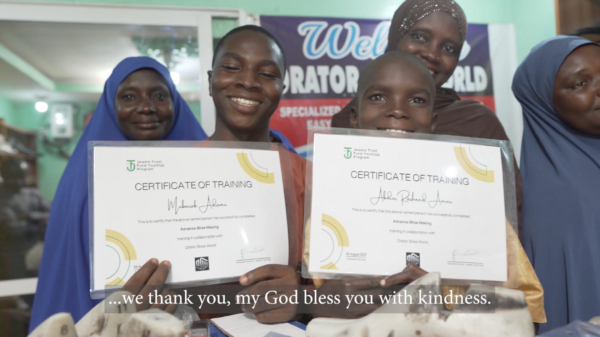
What they asked for
Branding for the foundation.
What it actually was
Interest-free lending looks like charity. Money that looks like charity gets treated like charity, and that shows up in repayment.
What I actually did
Jewels Trust Fund gives interest-free loans to people in underserved communities and then follows the businesses those loans go into. The brand had to do two things at once: look serious enough that taking a loan feels like a real commitment, and warm enough that a first-time borrower isn’t intimidated out of applying. Get either direction wrong and it costs the organisation real money.
We built the strategy and the full identity system, then stayed on through the first two training cohorts. We designed and printed the certificates the graduates received, photographed and filmed the cohorts and their graduation day, and cut a documentary from that footage. We also set up their social pages.
The documentary matters more than it sounds. A non-profit lives on being able to show a funder what actually happened, and most of them have nothing but phone photos.
What I made
What came out of it
A full brand system in field use, and two cohorts documented end to end.
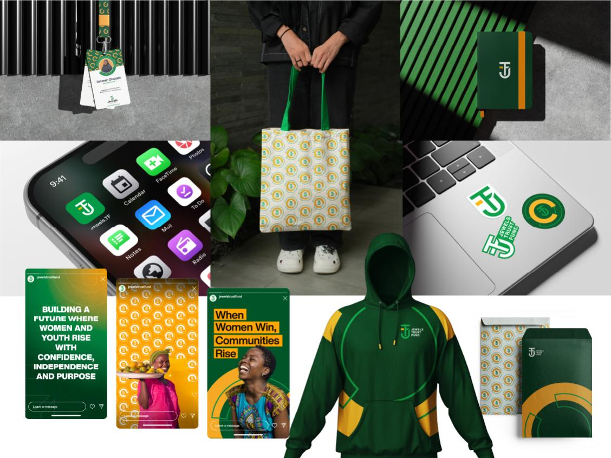
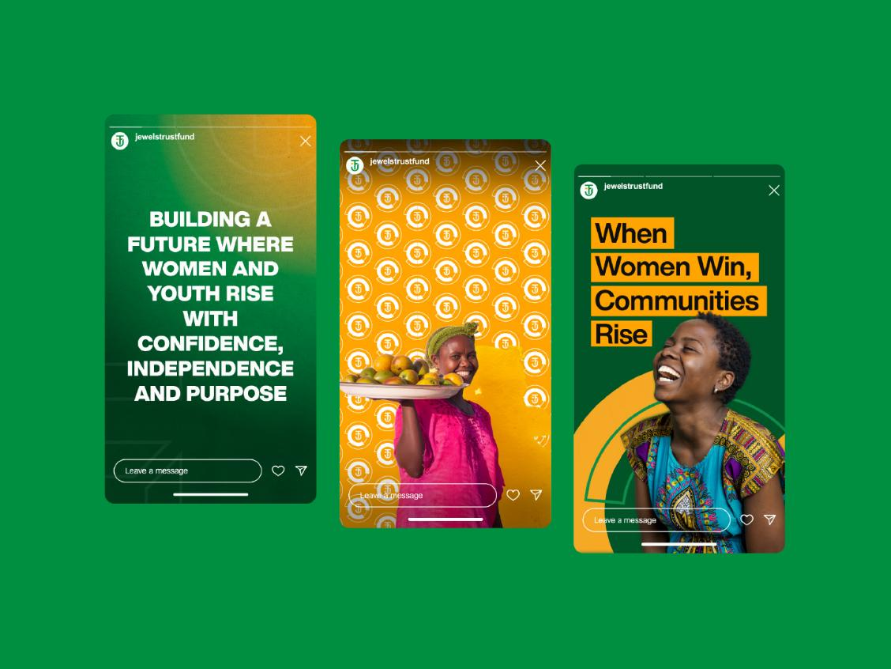
004 · Brand strategy · Identity · Print · Campaign film · Social · Hiring · 2022–present
ASVIOL — four years of campaigns, still running
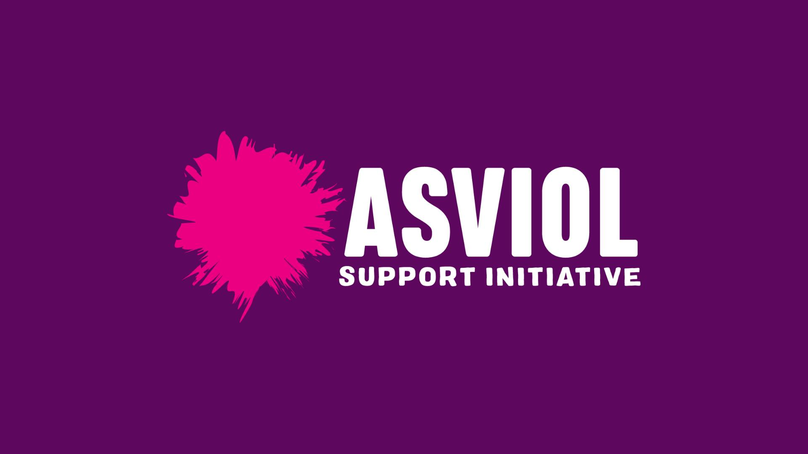
What they asked for
Materials for their SGBV prevention campaigns.
What it actually was
Advocacy work has one failure mode: everybody agrees with it and nobody watches it.
What I actually did
ASVIOL works to prevent sexual and gender-based violence in Nigeria — community engagement, training, curriculum, policy advocacy and research. The subject is heavy and the funding cycle rewards earnestness, which is exactly how the category ends up producing material that gets scrolled past. The job was never “make posters.” It was make prevention messaging people finish.
We built the whole thing: strategy, identity, campaign creative, and their first website. We ran their social accounts for the first six months, then helped them hire and hand over — including recruiting their marketing manager and their design team. That handover was the point. An advocacy organisation that depends on an agency to speak is one budget cycle away from going silent.
Four years later we still produce their campaign films and all their print.
What I made
What came out of it
The longest-running relationship in the studio. ASVIOL now works with partners including UN Women, the Embassy of Sweden, the MacArthur Foundation and the Malala Fund.
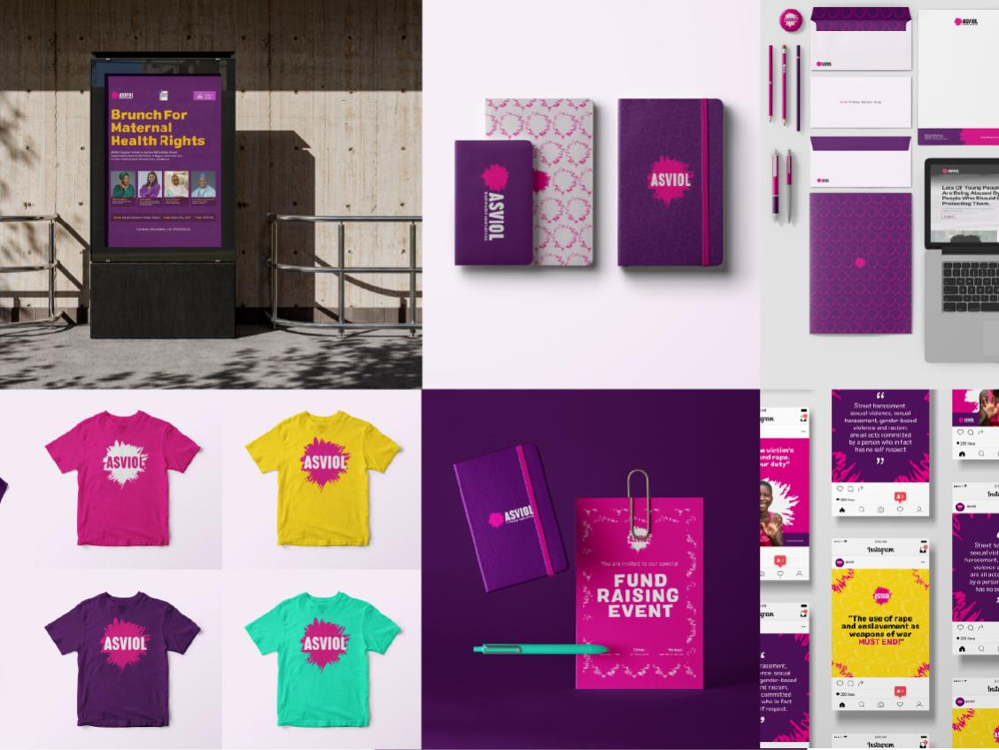
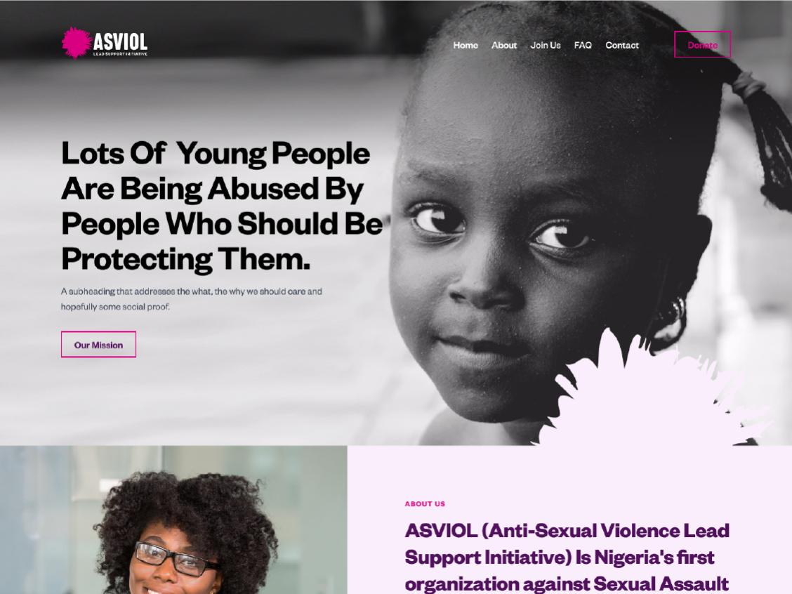
005 · Brand strategy · Identity · Menu design · Photography · Launch · 2021
Ancient Flavours — a restaurant, launched properly
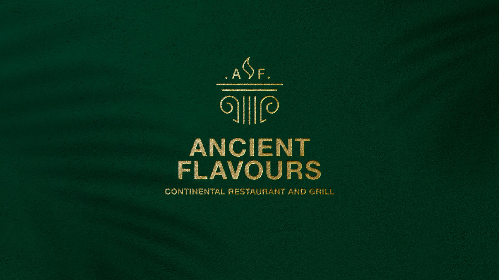
What they asked for
A brand for a new restaurant.
What it actually was
A restaurant gets one opening night. If the room is empty, the food never gets a chance.
What I actually did
The identity was the easy half. The hard half was making sure people showed up.
We built the strategy and the full identity, designed the food and drinks menus, and shot the actual dishes so the brand launched with real photography instead of stock images of food nobody serves. We set up the social pages, then ran the launch: briefed influencers, placed the story with media outlets, and coordinated the opening itself.
Then we trained their in-house marketing team and handed over — which is the correct ending for a restaurant, because the people in the building are the ones who know what came out of the kitchen today.
What I made
What came out of it
Launched, then handed to an in-house team we trained.
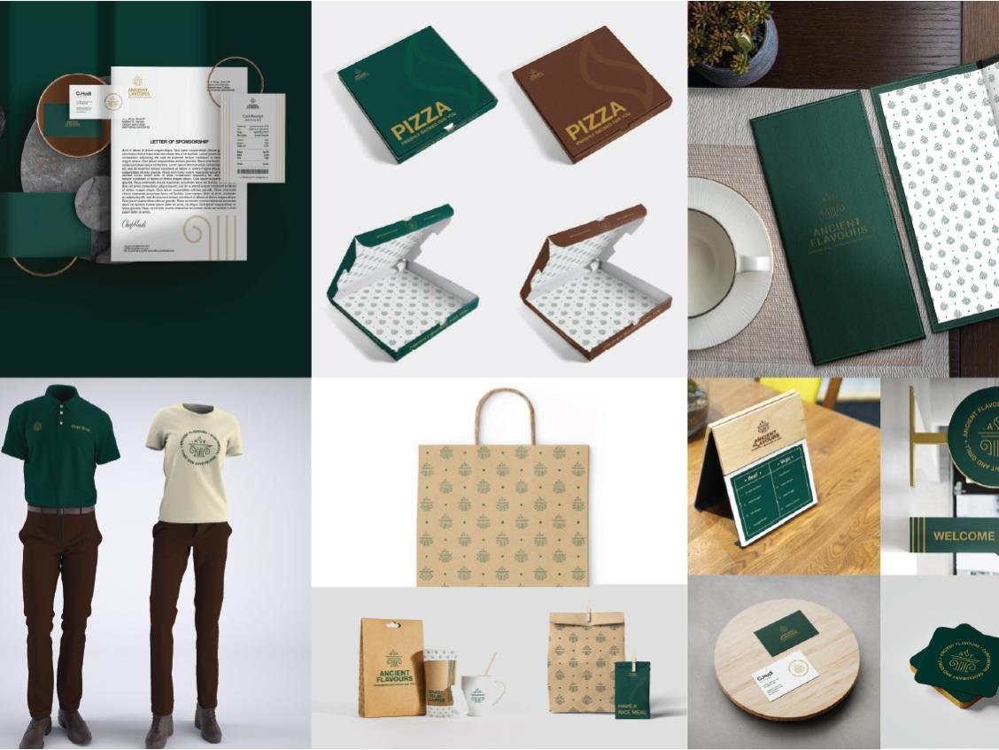
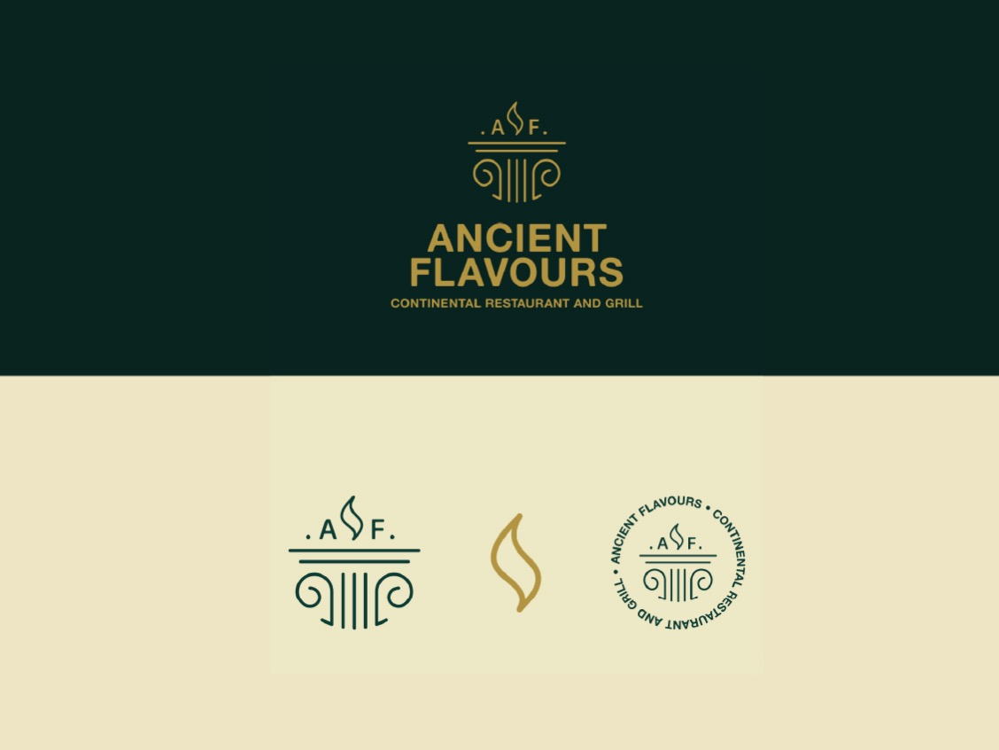
006 · Brand strategy · Identity · Print · Social ads · Booking · 2019
Magna — a clinic that got people through the door
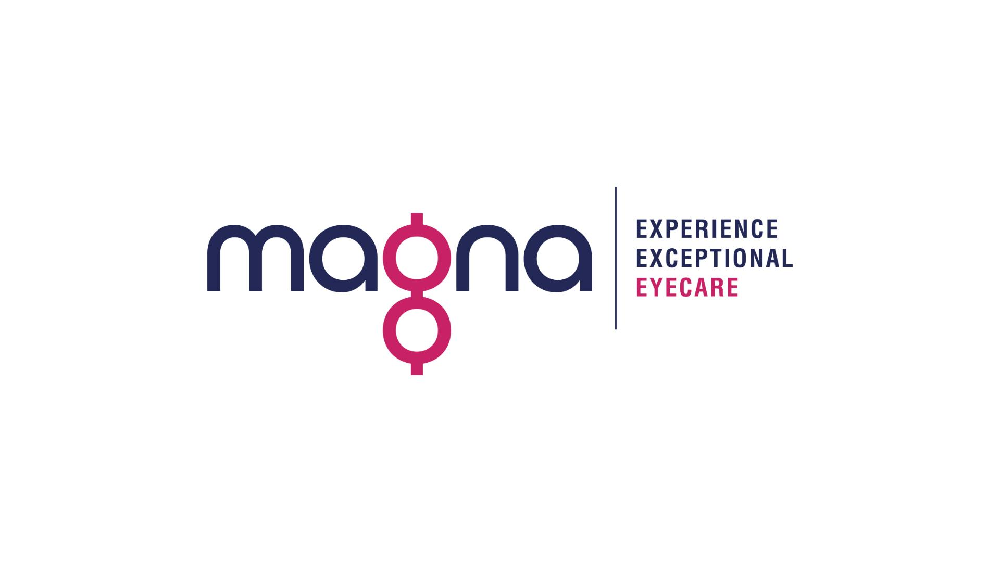
What they asked for
A professional look for the clinic.
What it actually was
They didn’t need a better-looking clinic. They needed more people booking appointments.
What I actually did
Eye care is something people put off until they can’t read a road sign. A nicer logo doesn’t move that. What moves it is a reason to come in now and someone they trust telling them to.
So alongside the strategy and the full identity, we built a referral campaign: existing patients got a discount or an incentive for bringing in friends and family. The cheapest new patient a clinic can get is the one an existing patient walks in with, and eye care is a category people happily recommend once they’ve had a good experience.
We designed and printed the flyers and distributed them, ran social advertising behind the campaign, and set up a system so people could book an appointment straight from social media instead of having to call. Removing the phone call removes the main reason people postpone.
What I made
What came out of it
A referral engine the clinic could keep running after handover.
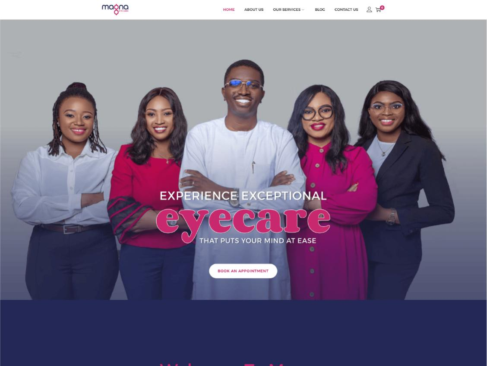
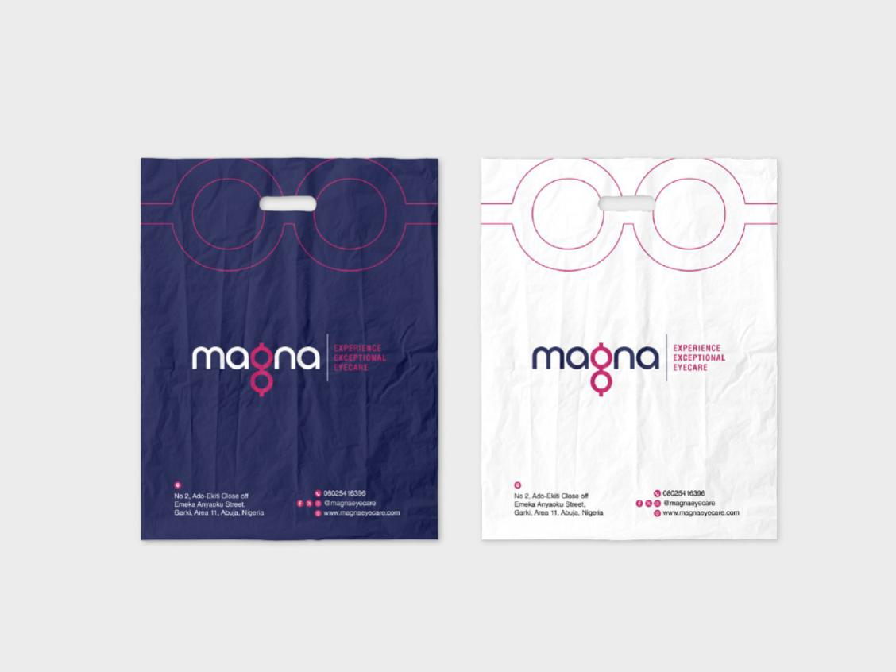